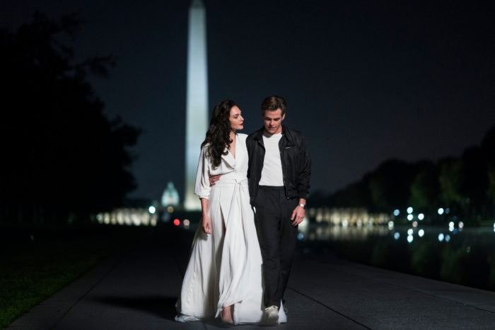
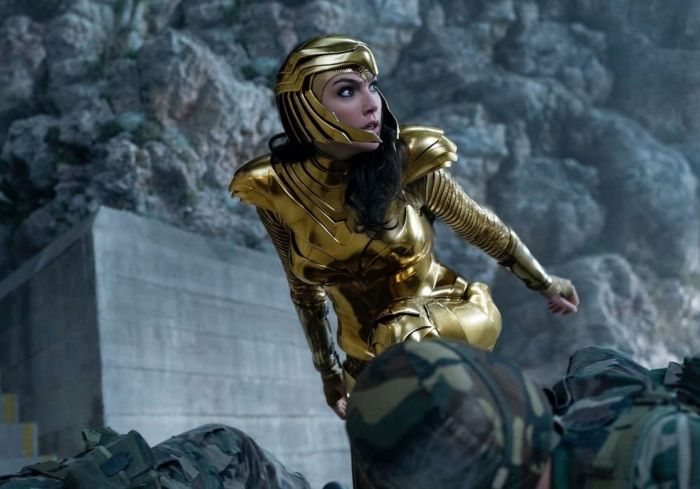
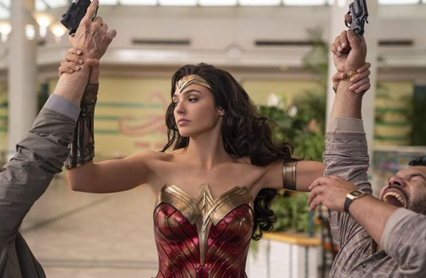

SINOPSIS
Film Wonder Woman 1984 menceritakan petualangan Diana Prince (Gal Gadot) yang terlibat konflik dengan Uni Soviet semasa Perang Dingin era 1980-an. Dia harus berhadapan dengan musuh tangguh bernama Cheetah (Kristen Wiig) dan Maxwell Lord (Pedro Pascal). Film ini juga kembali menghidupkan Steve Trevor (Chris Pine), pilot sekaligus cinta pertama Diana Prince.
REVIEW
Alur film ini bukan lanjutan dari film pertama. Diana telah hidup bersama manusia selama lebih dari enam dekade. Kisah di film keduanya adalah kisah yang berdiri sendiri. Satu-satunya hal dari film pertama yang muncul lagi, yakni Diana dan Steve Trevor. Film keduanya menampilkan dunia yang benar-benar baru, zaman yang berbeda, Diana yang berbeda, dan cerita yang baru. Makanya, tak heran jika di awal film penonton kebingungan, Diana ini mau ngapain, menebak-nebak cerita apa yang dibawakan kali ini.

Kualitas visual terutama tiap adegan aksi sukses bikin pandangan kalian enggak bisa lepas dari layar. Film Wonder Woman 1984 juga masih mengandalkan adegan slow motion dan efek CGI yang halus. Diana yang berayun di petir dengan Lasso, melompat tinggi, atau lari cepat yang mengingatkan pada adegan di komiknya. Ditambah adegan siang atau malam dengan pencahayaan serta sudut pengambilan gambar yang wide, bikin gambar subjek dan lanskap di belakangnya saling melengkapi.

Secara garis besar, film kedua ini penuh warna dan punya kisah menyentuh dalam hidup Diana Prince, secara personal maupun bagi para karakternya. Kisah ini dengan mudah menjadi sorotan sebagai film DC modern yang paling menyenangkan, berhasil membuktikan bahwa film superhero tak harus penuh ledakan untuk menunjukkan superheroiknya. Patty Jenkins pun terlihat punya visi luas yang bikin film ini punya jiwa dan karakter. Melihat dua film yang digarapnya berhasil, tak mengherankan dia akan jadi sutradara wanita film superhero tersukses, dan namanya masuk nominasi ajang penghargaan.

Gal Gadot yang sukses bikin para cowok naksir lewat tatapan tajam. Satu sisi bikin Wonder Woman terkesan garang, di sisi lain tampil anggun, naif, dan dewasa. Chemistry-nya dengan Chris Pine hadirkan kelegaan dari pasangan yang sudah puluhan tahun tak bertemu.